Mikrocomputertechnik 1
Einheit 3: Speicherzugriff und Kontrollfluss
Zwei neue Möglichkeiten
- Bisher: Register rechnen mit vorhandenen Werten.
- Heute: Daten aus dem Speicher lesen und zurückschreiben.
- Heute: entscheiden, überspringen und wiederholen.
- Leitbeispiel: fünf Zahlen im Array \(A=[10,20,30,40,50]\).
Lernziele und bekannte Grundlagen
- Adresse, Byteoffset und Inhalt auseinanderhalten
lw/swund Teilzugriffe mit konkreten Werten verfolgen- Bedingte und unbedingte Sprünge erklären
- Eine Array-Schleife einschließlich leerem Fall prüfen
- Befehlsfelder nutzen; keinen Hardwaretakt aus Step ableiten
1. Adressen bilden, Wörter übertragen
Ein Array belegt lückenlos Byte
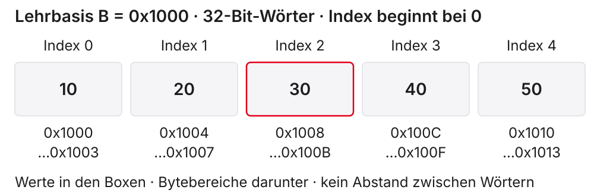
\[\operatorname{Adresse}(A[i])=B+4i,\qquad 0\le i<5\]
Ein Pointer enthält eine Adresse
Lehrannahme: s1 = 0x1000; dort liegt \(A[0]=10\).
| Ausdruck im Maschinenmodell | Bedeutung |
|---|---|
Inhalt von s1 |
Adresse 0x1000 |
| vier Byte ab dieser Adresse | Wort 0x0000000A |
addi t0, s1, 0 |
Adresse nach t0 kopieren |
lw t0, 0(s1) |
gespeicherte Zahl nach t0 laden |
Daten deklarieren und ihre Adresse laden
Codeausschnitt; der kontrollierte Abschluss folgt im Laborrahmen.
Basis plus signed Byteoffset
\[EA=(R[rs1]+\operatorname{sext}_{12\to32}(imm))\bmod 2^{32}\]
- \(EA\): effektive Adresse des Zugriffs
offset(rs1): direkte Zahl und Basisregister- Offsetbereich: \(-2048\) bis \(2047\) Byte
- Auch
lbuverwendet einen signed Adressoffset.
lw: Adresse hin, Daten zurück
lw t0, 8(s1)
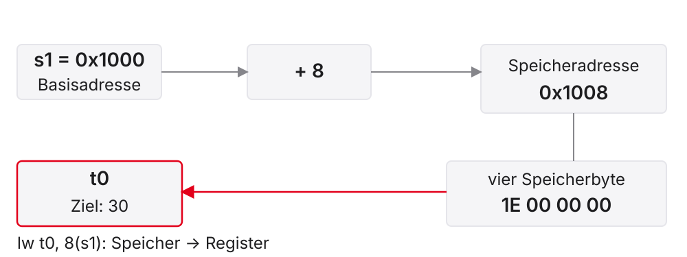
sw: Registerdaten werden Speicherinhalt
sw t0, 12(s1)
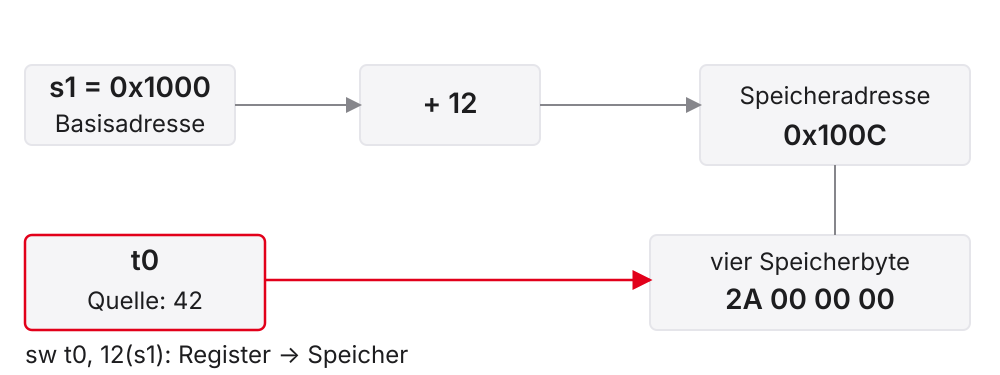
Lesen, rechnen, zurückschreiben
Anfang: \(A=[10,20,30,40,50]\), s1 enthält die Basis.
Danach: \(A=[10,20,30,42,50]\).
Ein variabler Index ist kein lw-Immediate
s1: Basis \(B\), t0: gültiger Index \(i=3\).
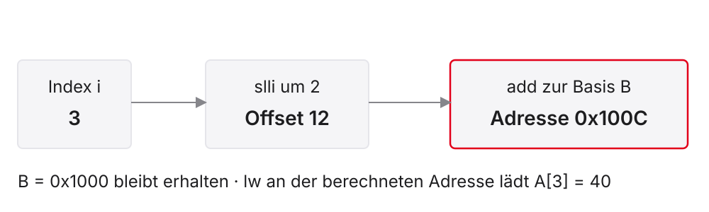
Negative Offsets beziehen sich auf die aktuelle Basis
Lehrannahme: s1 = 0x100C zeigt bereits auf \(A[3]\).
s1 bleibt bei allen drei Loads 0x100C.
Ausrichtung prüft die effektive Adresse
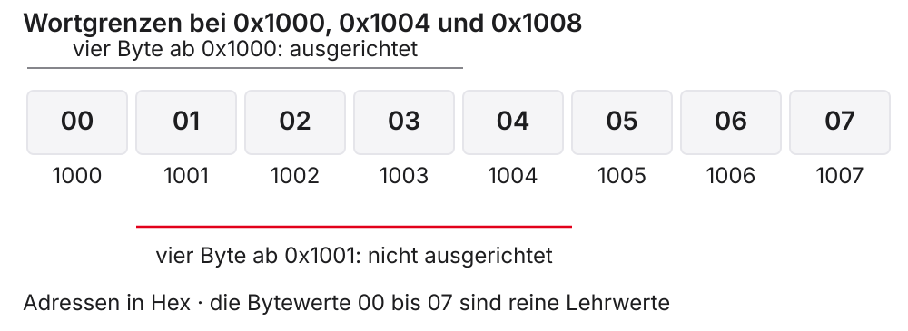
- Wortzugriff: \(EA\bmod4=0\); Halbwort: \(EA\bmod2=0\)
- Ein gerader Offset genügt bei unpassender Basis nicht.
- Kursaufgaben verwenden natürlich ausgerichtete Zugriffe.
2. Kleine Speicherstücke, volle Register
lb und lbu: dasselbe Byte, anderes Ergebniswort
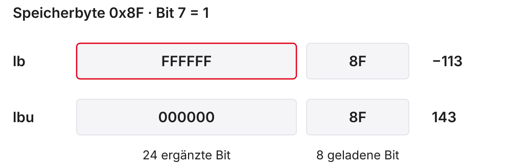
An den Grenzen wird die Erweiterung sichtbar
| Speicherbyte | lb: Wort / signed Wert |
lbu: Wort / Wert |
|---|---|---|
0x7F |
0x0000007F / 127 |
0x0000007F / 127 |
0x80 |
0xFFFFFF80 / −128 |
0x00000080 / 128 |
0xFF |
0xFFFFFFFF / −1 |
0x000000FF / 255 |
Die Interpretation entsteht beim Laden; das Byte bleibt unverändert.
Halbwörter: zwei Byte und Bit 15
lh: Load Halfword, mit Vorzeichenerweiterunglhu: Load Halfword Unsigned, mit Nullen- Little Endian: Bytefolge
00 80ergibt Halbwort0x8000.
| Befehl | Registerwort | Zahlenwert |
|---|---|---|
lh t0, 0(s1) |
0xFFFF8000 |
−32768 |
lhu t1, 0(s1) |
0x00008000 |
32768 |
sb und sh überschreiben nur einen Teil
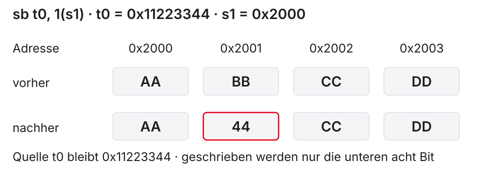
sh schreibt entsprechend die unteren 16 Bit in zwei Byte.
Die Zugriffsbreite ist Teil des Befehls
| Breite | Load signed | Load unsigned | Store | natürliche Ausrichtung |
|---|---|---|---|---|
| 1 Byte | lb |
lbu |
sb |
jede Byteadresse |
| 2 Byte | lh |
lhu |
sh |
Adresse durch 2 teilbar |
| 4 Byte | lw |
gleiches Wort | sw |
Adresse durch 4 teilbar |
Alle Speicherbefehle hier: Basis plus signed Zwölf-Bit-Byteoffset.
3. Speicherbefehle im Maschinenwort
lw verwendet das I-Format
lw t0, 8(s1): t0=x5, s1=x9.
| Feld | Bits | Wert |
|---|---|---|
imm[11:0] |
31:20 | 000000001000 |
rs1 |
19:15 | 01001 |
funct3 |
14:12 | 010 |
rd |
11:7 | 00101 |
opcode |
6:0 | 0000011 |
Maschinenwort: 0x0084A283.
S-Format: zwei Quellen, kein rd
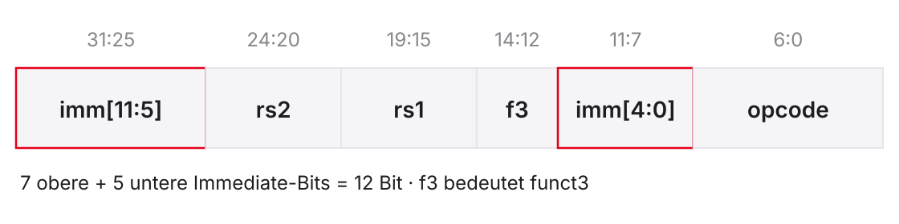
sw rs2, offset(rs1): Datenquelle rs2, Basis rs1.
sw mit negativem Offset codieren
sw t0, -4(s1): rs2=x5, rs1=x9.
Offset \(-4\): 0xFFC → oben 1111111, unten 11100.
Maschinenwort: 0xFE54AE23.
Das S-Immediate wieder zusammensetzen
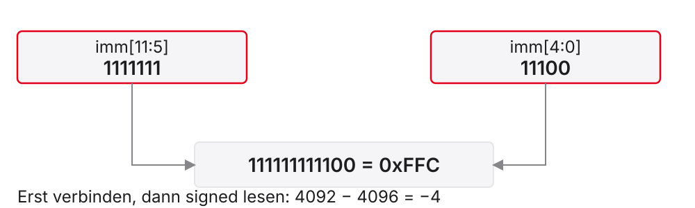
Erst zwölf Bit rekonstruieren, danach auf 32 Bit vorzeichenerweitern.
Rückrechnung eines Stores
Wort 0x0054A623:
opcode=0100011,funct3=010→swrs2=5,rs1=9; Offset000000001100→ 12- Ergebnis:
sw t0, 12(s1); Bits 11:7 sind keinrd.
4. Die nächste Instruktion auswählen
Branch: zwei mögliche Folgeadressen
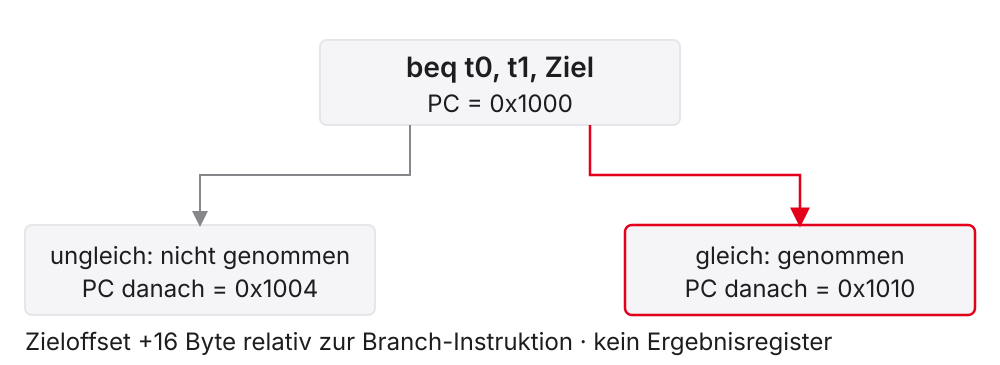
Labels benennen Adressen
Weiterbenennt die Adresse der folgenden Instruktion.- Das Label selbst erzeugt kein Instruktionswort.
- Adressabstände zählen native Befehle, nicht Quelltextzeilen.
beq und bne lesen zwei Register
Anfang: t2=0.
t0=t1:t2bleibt 0.t0ungleicht1:t2wird 1.bnespringt bei Ungleichheit;t3wird in beiden Fällen 9.
Signed Relationen: blt und bge
| Befehl | Bedeutung für Zweierkomplementwerte \(A,B\) |
|---|---|
blt rs1, rs2, Ziel |
springen, wenn \(A<B\) |
bge rs1, rs2, Ziel |
springen, wenn \(A\ge B\) |
| Quellen | blt genommen? |
bge genommen? |
|---|---|---|
| \(-5\), \(2\) | ja | nein |
| \(2\), \(2\) | nein | ja |
| \(3\), \(2\) | nein | ja |
Unsigned vergleicht dieselben Bits anders
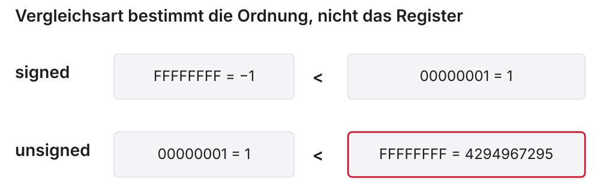
bltu: vorzeichenlos kleinerbgeu: vorzeichenlos größer oder gleich
Kleiner oder gleich: Quellen vertauschen
\[A\le B\quad\Longleftrightarrow\quad B\ge A\]
- Für vorzeichenlose Werte:
bgeu t1, t0, Ziel blekann eine Pseudoschreibweise dafür sein.- Relation und Reihenfolge gemeinsam prüfen.
Der Sprungoffset zählt ab der Branch-Adresse
\[PC_{\text{nach}}=\begin{cases} PC_{\text{vor}}+\Delta,&\text{Bedingung erfüllt}\\ PC_{\text{vor}}+4,&\text{sonst} \end{cases}\]
| Branch-Adresse | Ziel | signed Byteoffset \(\Delta\) |
|---|---|---|
0x1000 |
0x1010 |
+16 |
0x1018 |
0x1000 |
−24 |
Das B-Immediate liefert diesen Byteoffset; kein zweites Verdoppeln.
j springt ohne Datenbedingung
Gültige native Entwicklung: jal x0, Ende.
j beendet das Programm nicht und löscht keine Register.
Genau einer von zwei Blöcken
Auftrag: bei s0=s1 Ergebnis 1, sonst Ergebnis 2 in t0.
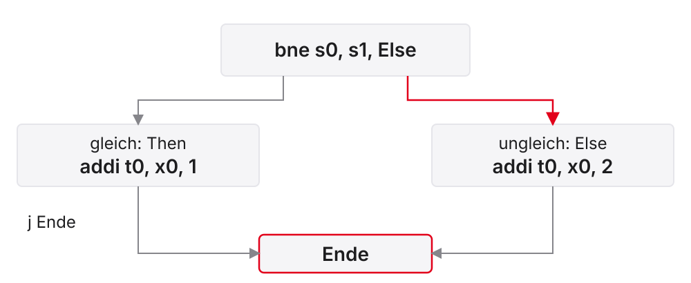
Die Entscheidung als vollständiger Ausschnitt
Beide Wege: t1=9. Ergebnis t0 wird genau einmal gesetzt.
Selbstprüfung: Was fehlt in diesem Pfad?
Was steht für gleiche und ungleiche Eingaben am Ende in t0?
5. Wiederholen, bis die Arbeit erledigt ist
Eine kopfgesteuerte Schleife
- Test vor dem Rumpf
- Initialisierung vor dem Rücksprungziel
- Für \(N=0\): kein Durchlauf
Ein kleiner Schleifen-Trace
Welcher Wert entsteht in s0, und wie oft wird getestet?
Ein Test nach dem Rumpf hat andere Randfälle
- Für Grenze 3 funktioniert dieses Zählerbeispiel.
- Für Grenze 0 wird der Rumpf trotzdem zuerst ausgeführt.
- Ein korrektes Beispiel ist kein allgemeines Schleifenmuster.
Registerplan für die Array-Summe
| Bedeutung | Register | Anfang |
|---|---|---|
| erledigte Elemente \(i\) | t0 |
0 |
| Anzahl \(N\) | t1 |
5 |
| laufender Pointer | s1 |
Basis \(B\) |
| Summe | s0 |
0 |
| aktuell geladener Wert | t2 |
erst nach lw benötigt |
Voraussetzung: \(0\le N\le5\), gültige natürlich ausgerichtete Daten.
Test, Rumpf, Update, Rücksprung
Initialisierung gemäß Registerplan erfolgt vor Loop.
Der Test schützt den Zugriff
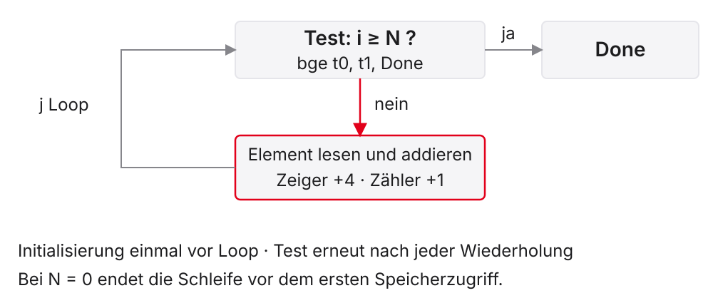
Was am Schleifenkopf immer gelten soll
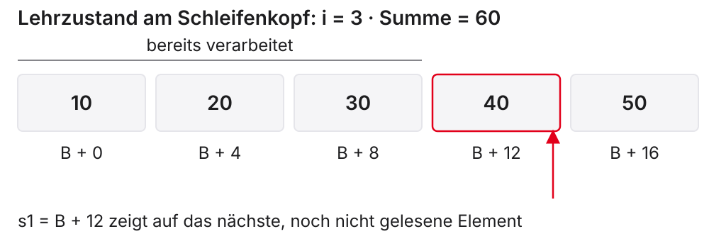
t0: bereits verarbeitete Elementes1: Basis plus viermalt0s0: Summe dieser bereits verarbeiteten Elemente
Die komplette Zustandsfolge
Zustand am Testlabel Loop, vor bge:
t0: \(i\) |
s1 |
s0 |
nächste Aktion |
|---|---|---|---|
| 0 | \(B\) | 0 | 10 laden |
| 1 | \(B+4\) | 10 | 20 laden |
| 2 | \(B+8\) | 30 | 30 laden |
| 3 | \(B+12\) | 60 | 40 laden |
| 4 | \(B+16\) | 100 | 50 laden |
| 5 | \(B+20\) | 150 | nach Done springen |
N gleich null ist ein eigener Prüfungsfall
Anfang: t0=0, t1=0, s0=0.
Ergebnis: Summe 0, unveränderter Pointer, kein Speicherlesen.
Zwei Adressierungsmethoden nicht doppelt zählen
| Methode | Basis | zusätzliche Adresse |
|---|---|---|
| laufender Pointer | s1 wächst um 4 |
lw t2, 0(s1) |
| feste Basis und Index | s1 bleibt \(B\) |
slli, add, dann lw |
- Beide Methoden können das nächste Element finden.
- Pointerbewegung plus derselbe Indexoffset würde doppelt vorwärts gehen.
- Erster ungültiger Index bei fünf Wörtern: \(i=5\).
6. Papiermodell und Venus zusammenführen
Speicheransicht: erst die Anzeigeeinheit klären
- Kurs-Venus öffnen und neu assemblieren
- Arrayadresse aus
labeziehungsweise Labelanzeige ablesen - Prüfen: einzelne Byte oder zusammengesetzte Wörter?
- Register und Speicher vor und nach derselben Instruktion vergleichen
- Nach Änderungen neu starten; keine feste Labeladresse voraussetzen
Laborauftrag: negative Arraywerte zählen
- Neue Daten:
.word -5, 8, -2, 7, -1, 0 - Vor jedem Load die Längengrenze prüfen
- Nur bei negativem geladenem Wert den Zähler erhöhen
- Varianten: \(N=0\), \(N=1\), \(N=6\) und ein Grenzwert statt null
- Anzahl zusätzlich im Ergebniswort hinter den Daten ablegen
Ausgabe: der Zählwert bleibt vor dem Dienst prüfbar
Für die sechs Laborwerte vor mv: s0=3. Druckzahl: 3, danach Ende.
Selbstkontrolle vor dem Quiz
- Warum ist \(A[3]\) ein Byteoffset von 12 und kein Offset von 3?
- Was bleibt bei
sw t0, 12(s1)unverändert? - Warum liefert
lbuvon0xFF255, auch mit Offset −1? - Warum gibt es bei fünf Durchläufen sechs Schleifentests?
Ausblick und Quellen
- Einheit 4: Funktionen, Rückkehradressen und Aufrufkonvention
- Harris/Harris: Digital Design and Computer Architecture — RISC-V Edition
- Patterson/Hennessy: Computer Organization and Design — RISC-V Edition
- Venus-Dienste dokumentiert